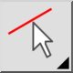
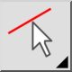

Negiraj izbor
Orodna vrstica / ikona:


Meni: Izberi > Negiraj izbor
Bližnjice: T, I
Ukazi: selectinvert | invertselection | ti
Orodna vrstica / ikona:


Meni: Izberi > Negiraj izbor
Bližnjice: T, I
Ukazi: selectinvert | invertselection | ti
Označi vse neoznačene objekte ter odznači vse označene objekte.